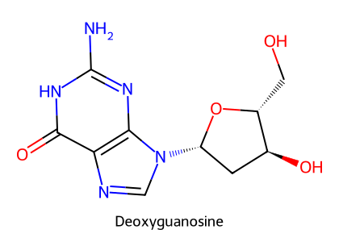
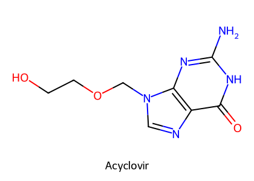
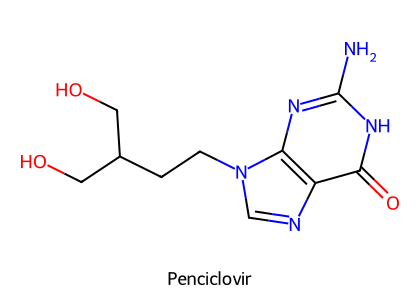
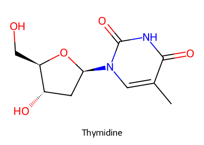
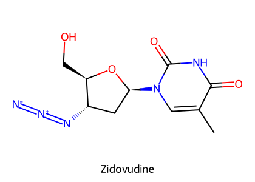
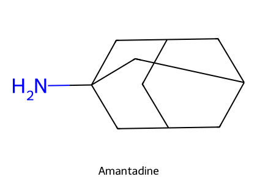
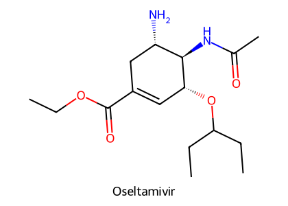

重點摘要
病毒是專性細胞內寄生，借用宿主的能量、蛋白質與核酸合成系統複製，所以抗病毒藥比抗生素更難有選擇性、治療窗更窄。控制病毒病的主流仍是疫苗。抗病毒藥依作用點分四類：脫殼（amantadine）、轉錄／核酸合成（acyclovir、famciclovir、zidovudine）、轉譯（idoxuridine）、釋出（oseltamivir）。大部分是核苷類似物：長得像 dGTP 或 thymidine，被磷酸化成三磷酸後插入病毒 DNA，造成鏈終止。選擇性來自病毒的 thymidine kinase 先做第一步磷酸化。
- Acyclovir：guanosine 類似物，病毒 thymidine kinase 磷酸化 → 三磷酸競爭 dGTP、抑制病毒 DNA 聚合酶、鏈終止。貓疱疹病毒（FHV-1）對 acyclovir 敏感性很低，講義所附 MSD 表與 VPT10 都不建議用於貓。
- Famciclovir：penciclovir 的口服前驅藥；目前唯一常規用於貓 FHV-1 的全身性抗病毒藥（PO 90 mg/kg q8–12h）。
- Zidovudine（AZT）：thymidine 類似物、反轉錄酶抑制劑，用於 FIV 貓；不能清除病毒血症；主要副作用貧血（Hct <20% 停藥）。
- Idoxuridine、trifluridine、cidofovir、vidarabine、ganciclovir：眼用治療疱疹性角膜炎。
- Amantadine：阻斷流感 M2 離子通道（抑制脫殼）；獸醫主要用途是 NMDA 拮抗 → 輔助 NSAID 治療犬貓慢性疼痛；馬 IV 可能致命性癲癇。
- Oseltamivir：neuraminidase 抑制劑 → 阻止病毒出芽；犬小病毒 PO 2 mg/kg q12h（禁止用於家禽）。
- ω-Interferon：不直接攻擊病毒，而是誘導宿主產生抗病毒蛋白（2025 期末考第 50 題：調節免疫系統）；貓卡里西、FeLV、FIV、犬小病毒。
本頁藥物總覽
劑量取自講義所附的 MSD Veterinary Manual 抗病毒藥表（講義 p68–70）與講義內文；表中所有藥物都未核准用於產食動物。
| 藥物 | 類別／機轉 | 途徑與參考劑量 | 適應症 |
|---|---|---|---|
| Idoxuridine | Pyrimidine（thymidine 類似） | 眼用 0.1% 溶液或 0.5% 軟膏，q2–3h × 48 h，之後 q4–6h 至症狀消失後一週 | FHV-1、CHV-1、EHV-2 眼部感染 |
| Trifluridine | Pyrimidine | 眼用 1%，q2h × 2 天，之後每日 3–8 次；勿超過 3 週 | FHV-1、CHV-1；貓刺痛感較明顯；青光眼謹慎 |
| Vidarabine | Purine（adenine 類似） | 眼用 3% 軟膏 q5–6h | FHV-1 角膜炎 |
| Cidofovir | Nucleotide 類似物 | 眼用 0.5%，貓 q12h × 5 天 | FHV-1 |
| Acyclovir | Guanosine 類似物 | 犬 PO 10 mg/kg q6h（新生犬 CHV-1）；犬 IV 20 mg/kg q8h（預防犬小病毒）；馬 IV 10 mg/kg q12h（EHV）；貓禁用（MSD 表） | CHV-1、EHV、鳥 Pacheco's disease |
| Valacyclovir | Acyclovir 的 valine 酯前驅藥 | 馬 PO 27–40 mg/kg q8h × 2 天，之後 18–20 mg/kg q12h；貓禁用 | EHM、EHV-1、EHV-3 |
| Ganciclovir | Guanosine 類似物 | 眼用 0.15%（犬貓）；馬 IV | 貓疱疹角膜炎、EHM |
| Famciclovir | Penciclovir 前驅藥 | PO 貓 90 mg/kg q8–12h 至症狀消失後一週 | FHV-1 |
| Zidovudine（AZT） | Thymidine 類似物、NRTI | PO 或 SC 貓 5–10 mg/kg q12h | FIV、FeLV |
| Amantadine | M2 阻斷；NMDA 拮抗 | PO（犬貓慢性疼痛） | 流感 A；犬貓慢性疼痛（輔助 NSAID） |
| Rimantadine | Amantadine 衍生物 | 馬 PO 30 mg/kg q12h | 馬流感；美國禁用於家禽 |
| Oseltamivir（Tamiflu®） | Neuraminidase 抑制 | PO 犬 2 mg/kg q12h × 5 天；馬同劑量 | 犬小病毒、馬流感；美國禁用於家禽 |
| Interferon alfa-2 | 細胞激素 | 貓 60 IU/隻 PO 或頰黏膜 q24h，給 7 天停 7 天 | FeLV；使用期間勿接種疫苗 |
| Feline ω-interferon（rFeIFN-ω） | 細胞激素，誘導宿主抗病毒蛋白 | 注射 | 貓卡里西、FeLV、FIV；犬小病毒 |
| Ribavirin | Guanosine 類似物 | — | 貓禁用（加重卡里西病毒感染、骨髓抑制） |
| L-Lysine | 競爭 arginine | PO | FHV-1 輔助（效果令人失望） |
| Cytarabine | Cytosine 類似物 | SC、IV | 抗癌（白血病、淋巴瘤）；犬腦脊髓膜炎 |
病毒生活史與抗病毒藥作用點
抗病毒治療的難處（講義）
- 病毒由核酸核心與蛋白殼（capsid）組成，部分外有脂蛋白套膜；無法獨立複製，借用宿主的能量、蛋白質與 DNA／RNA 合成系統。
- 潛伏感染：病毒基因體整合到宿主基因體中休眠，之後可在沒有再暴露的情況下重新活化（例如 FHV-1）。
- 需要頻繁給藥（一天數次）才有效。
- 在動物研究少；HIV 研究以貓為模式後，貓的知識才增加。
- 產食動物使用會讓人類病原產生抗藥性：2006 年 FDA 禁止在雞、火雞、鴨仿單外使用 adamantanes 與 neuraminidase 抑制劑（擔心 H5N1 等流感 A 產生抗藥株）。
- 抗病毒藥的治療窗比抗菌藥窄；腎毒性在人醫逐漸成為重要不良反應。
核苷類似物的分類（講義）
| 類別 | 機轉 | 藥物與用途 |
|---|---|---|
| Pyrimidine nucleosides | 以 pyrimidine 取代 thymidine → 有缺陷的 DNA | 疱疹：idoxuridine（角膜與皮膚表層）；肝炎病毒與巨細胞病毒：trifluridine、cidofovir；FIV：zidovudine |
| Purine nucleosides | 可作為全身性藥物 | 疱疹：acyclovir、vidarabine、cytarabine；呼吸道病毒：amantadine（講義歸類於此）；肝炎病毒與巨細胞病毒：penciclovir、famciclovir、valacyclovir |
抗疱疹病毒核苷類似物重要



結構式依 PubChem 資料以 RDKit 自繪。比較 deoxyguanosine 與 acyclovir，就能看出「鏈終止」從哪裡來。
Acyclovir 的作用機轉
| Acyclovir | Famciclovir | |
|---|---|---|
| 化學 | Guanosine 衍生物，對特定疱疹病毒有選擇性 | Penciclovir 的二乙酸酯口服前驅藥（Famvir®）；體內迅速轉成 penciclovir，機轉同 acyclovir |
| 講義用途 | 貓 FHV-1 眼部與呼吸道感染（PO BID）；馬疱疹病毒脊髓腦病（EHM）治療與預防 | 貓 FHV-1（PO） |
| 藥動學 | 口服生體可用率差；VPT10：犬 >80%、人 10–30%、馬 <5% | VPT10：貓吸收慢、變異大、可飽和（40 mg/kg 時 12.5% → 90 mg/kg 時 7%）；貓 penciclovir t½ 3–4 h |
| 副作用 | 白血球減少、掉毛、貧血（停藥可逆）；注射可致腎毒性與神經毒性 | 貓使用 ≤3 週耐受良好；90 mg/kg q8h 部分貓厭食、多渴 |
講義第 55 張寫 acyclovir「治療貓第 I 型疱疹病毒感染所引起的眼部和呼吸道症狀，口服一天兩次」（與 HBK 敘述相同）；但講義第 69 張附的 MSD Veterinary Manual 表寫「Cats: Contraindicated due to risk of myelosuppression and nephrotoxicity」，valacyclovir 也是「貓禁用（肝、腎、骨髓毒性）」。VPT10 Ch.38 支持後者：FHV-1 對 acyclovir 只有微弱敏感性（IC50 比人的 HSV-1 高 100 倍以上），貓口服高劑量 valacyclovir 不但沒有抑制 FHV-1，還出現毒性；並指出 famciclovir 是目前唯一常規用於貓 FHV-1 的全身性抗病毒藥（FHV-1 對 penciclovir 比對 acyclovir 敏感）。臨床上貓 FHV-1 選 famciclovir；考試若問 acyclovir 的「講義用途」，照講義第 55 張作答。
眼用抗疱疹藥
| 藥物 | 機轉（講義） | 注意（MSD 表） |
|---|---|---|
| Idoxuridine | 類似 uridine 的假 RNA 類似物；宿主細胞先磷酸化 → 以錯誤配對取代 thymidine 插入 → 鏈終止、阻止轉錄物轉譯 | 只有眼用劑型；局部刺激；可能致畸胎，孕婦避免接觸；美國已無市售（可調劑） |
| Trifluridine | Pyrimidine 類似物 | 貓刺痛感明顯；可能升高眼壓（青光眼謹慎）；勿超過 3 週（角膜毒性） |
| Vidarabine | Adenine 類似物，三磷酸形競爭抑制 DNA 聚合酶 | 3% 調劑軟膏 |
| Cidofovir | Nucleotide 類似物 | 可能致畸胎 |
| Ganciclovir | Guanosine 類似物 | 0.15% 眼用；可能致畸胎 |
Cytarabine 與 Vidarabine（講義）：分別是 cytosine 與 adenine 的核苷類似物，轉成三磷酸後競爭抑制 DNA 聚合酶，對疱疹病毒、痘病毒、狂犬病毒、巨細胞病毒等 DNA 病毒有效。Cytarabine 在犬貓主要當抗癌藥（白血病、淋巴瘤），也以 SC、IV 治療犬腦脊髓膜炎；vidarabine 偶以 3% 軟膏治疱疹性角膜炎。見 抗癌藥物。
Zidovudine（AZT）與 FIV


結構式依 PubChem 資料以 RDKit 自繪。
- 機轉：前驅藥，需磷酸化成活性的 5'-三磷酸（AZTTP）→ 與 thymidine 競爭插入病毒 DNA → 鏈終止，抑制反轉錄酶（NRTI）。
- 用途：低濃度即對多種反轉錄病毒有效；貓 FIV。不能抑制病毒血症，開始治療約 14 天後臨床改善；在出現明顯免疫缺陷症狀時能暫時減輕臨床症狀；非毒性劑量下無法有效對抗 FeLV。
- 給藥：口服每日 2–3 次，至少 4 週（MSD 表：PO 或 SC 5–10 mg/kg q12h）。
- 藥動學：貓口服生體可用率 95%；迅速代謝經尿排出，貓 t½ 約 1.5 h。
- 貧血、血紅素下降（貓常見）；抑制葡萄糖醛酸結合或腎排除的藥物會增加骨髓抑制風險，在貓可能更明顯。MSD 表：骨髓抑制動物謹慎，監測貧血，Hct <20% 停藥。
- 腹瀉、無力。
- 抗藥性：反轉錄酶點突變，長期使用預期會產生抗藥性。
Amantadine 與 Oseltamivir


結構式依 PubChem 資料以 RDKit 自繪。
Amantadine（金剛胺）
| 面向 | 內容（講義） |
|---|---|
| 抗病毒機轉 | 結合流感病毒 M2 蛋白、阻斷其離子通道 → 抑制脫殼與後續複製；也可能干擾早期 mRNA 轉錄。對流感 A、流感 C、Sendai 病毒、假性狂犬病毒有效 |
| 地位 | 第一個抑制流感複製的合成化合物；抗藥性嚴重，美國已不建議用於人流感；FDA 禁止用於家禽 |
| 止痛機轉 | CNS 中拮抗 NMDA 受體；另抑制 dopamine 與兒茶酚胺回收、促進 dopamine 釋出、輕微抗膽鹼（帕金森氏症） |
| 獸醫主要用途 | 輔助 NSAID 或 opioid 治療犬貓慢性與神經性疼痛 |
| 藥動學 | 人：GI 幾乎完全吸收，約 90% 原形經尿排出；犬貓資料不足；馬 t½ 約 3.5 h（IV） |
| 副作用 | 躁動、軟便、脹氣、腹瀉；馬 IV 15 mg/kg 可能毫無預警地發生致命性癲癇，10 mg/kg 在癲癇閾值低的個體仍可能發作；人罕見不可逆肝酵素上升 |
Rimantadine：amantadine 衍生物，作用在病毒附著於細胞受體後的早期步驟；美國、澳洲無核准動物用藥。
Oseltamivir（Tamiflu®）
- 機轉：抑制病毒表面的 neuraminidase → 新病毒無法從宿主細胞出芽 → 阻止複製與感染力。
- 用途：控制流感病毒；對抗犬小病毒，有助於緩解臨床症狀（發燒）、減少排毒與繼發性細菌性肺炎；其他病毒的輔助治療缺乏研究。
- 給藥：犬 PO 2 mg/kg q12h；馬 q10h 或更頻繁（MSD 表：馬犬 2 mg/kg q12h × 5 天）。
- 藥動學：是 P-glycoprotein 的良好受質 → 幾乎不穿過 BBB。
- FDA：不允許仿單外使用（尤其家禽）。動物副作用目前無資料；人有噁心、嘔吐、暈眩、失眠。
Interferon、Ribavirin、L-Lysine
| 藥物 | 機轉 | 用途 | 注意 |
|---|---|---|---|
| Feline ω-interferon（rFeIFN-ω，貓源重組） | 細胞激素；不直接攻擊病毒，改變宿主細胞代謝、誘導抗病毒蛋白 → 破壞 mRNA、阻斷轉譯 | 貓卡里西病毒、FeLV、FIV 等貓病毒感染；犬小病毒 | 2025 期末考第 50 題：調節免疫系統的抗病毒機制 |
| Interferon alfa-2 | 同上 | 貓 FeLV：60 IU/隻 PO 或頰黏膜 q24h，給 7 天停 7 天 | 需調劑；使用期間勿接種疫苗 |
| Ribavirin | Guanosine 類似物，體外抑制多種 RNA 與 DNA 病毒 | 人：C 型肝炎、RSV、拉薩熱、流感 A、B | 貓口服反而使實驗感染卡里西病毒的貓惡化，出現骨髓抑制、體重下降、肝指數上升、黃疸；犬較耐受 |
| L-Lysine | 必需胺基酸，阻礙疱疹病毒複製所需的 arginine | FHV-1 輔助 | 臨床效果令人失望；可能在急性期早期或壓力期減少發病與排毒 |
臨床整合：物種與共病
| 情境 | 建議 | 避免或注意 |
|---|---|---|
| 貓 FHV-1 眼部或上呼吸道感染 | 全身：famciclovir；眼用：idoxuridine、cidofovir、ganciclovir、trifluridine、vidarabine；L-lysine 輔助 | Acyclovir、valacyclovir（FHV-1 不敏感、貓骨髓與腎毒性）；trifluridine 刺痛、勿超過 3 週 |
| FIV 貓出現免疫缺陷症狀 | Zidovudine；ω-interferon | 監測 Hct（<20% 停藥）；避免併用抑制葡萄糖醛酸結合或腎排除的藥物；griseofulvin 增加嗜中性球減少風險（見 抗黴菌藥物） |
| 犬小病毒 | 支持療法為主；oseltamivir、ω-interferon 可作輔助 | — |
| 犬貓慢性疼痛、神經性疼痛 | Amantadine 輔助 NSAID 或 opioid | 躁動、腹瀉；理論上癲癇閾值低的個體要小心（馬 IV 有致死性癲癇報告） |
| 腎病 | — | Acyclovir、valacyclovir 謹慎；避免併用其他腎毒性藥物 |
| 懷孕動物、懷孕操作人員 | — | Idoxuridine、cidofovir、ganciclovir 可能致畸胎；孕婦避免接觸或穿戴防護 |
| 產食動物、家禽 | — | 不核准；adamantanes、neuraminidase 抑制劑在美國禁用於家禽（抗藥性與公衛） |
考點整理
2025 期末 Q50：以調節免疫系統的細胞機制抑制病毒複製 → omega interferon（其他選項：amantadine 抑制脫殼、famciclovir 抑制 DNA 聚合酶、L-lysine 競爭 arginine）。
以下是依講義與教科書推測的方向，並非出自歷屆國考題目：四種作用點對應的代表藥；acyclovir 經病毒 thymidine kinase 活化與鏈終止機轉；famciclovir 是 penciclovir 前驅藥、用於貓 FHV-1；AZT 用於 FIV、副作用貧血；amantadine 的 M2 與 NMDA 雙重角色；oseltamivir 抑制 neuraminidase、用於犬小病毒；ribavirin 對貓有毒；產食動物禁用抗病毒藥的公衛理由。
學習重點整理
| 藥物 | 作用點 | 主要用途 | 關鍵注意 |
|---|---|---|---|
| Amantadine | 脫殼（M2）；NMDA | 流感 A；犬貓慢性疼痛 | 抗藥性；馬 IV 癲癇 |
| Acyclovir | DNA 聚合酶（鏈終止） | EHV、CHV；講義列貓 FHV-1 | FHV-1 不敏感、貓毒性（MSD、VPT10） |
| Famciclovir | DNA 聚合酶（penciclovir） | 貓 FHV-1 全身治療 | 貓吸收可飽和 |
| Zidovudine | 反轉錄酶（鏈終止） | FIV | 貧血；不清除病毒血症 |
| Idoxuridine 等眼用藥 | 轉譯／DNA 合成 | 疱疹性角膜炎 | 局部刺激；致畸胎 |
| Oseltamivir | 釋出（neuraminidase） | 流感、犬小病毒 | P-gp 受質、不入 BBB；家禽禁用 |
| ω-Interferon | 宿主免疫調節 | 貓病毒、犬小病毒 | — |
| Ribavirin | Guanosine 類似物 | 人 RNA 病毒 | 貓有毒 |
| L-Lysine | 競爭 arginine | FHV-1 輔助 | 效果有限 |